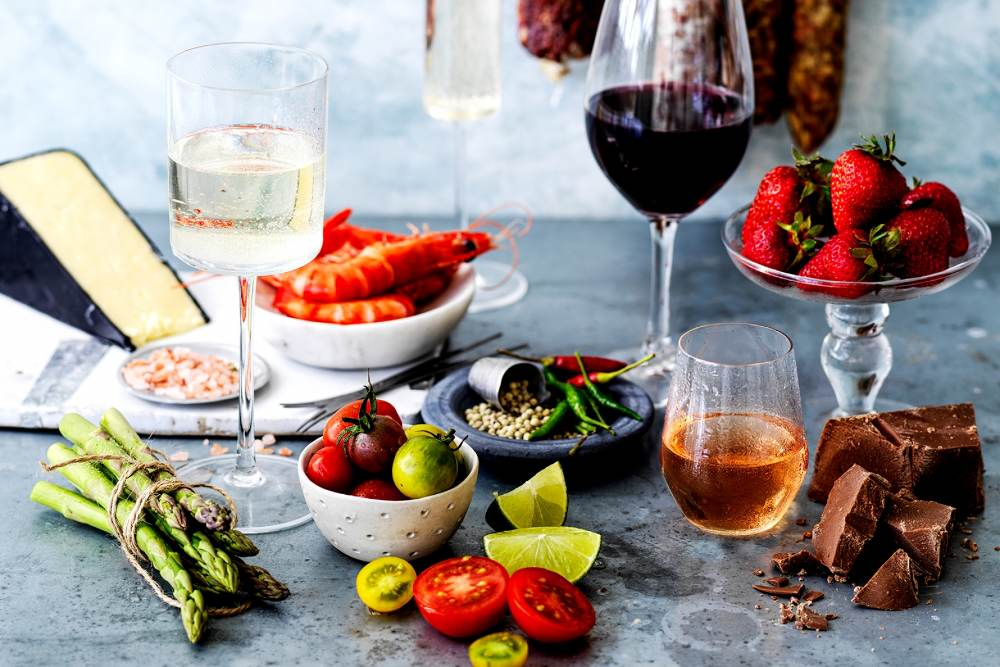
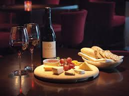
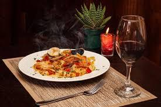

Vinho e carne
Os vinhos da Vinheria Agnello possuem taninos que interagem com a gordura da carne, limpando o paladar a cada mordida. Isso faz com que o sabor fique mais equilibrado e intenso, tornando a experiência mais rica e prazerosa.

Os vinhos da Vinheria Agnello possuem taninos que interagem com a gordura da carne, limpando o paladar a cada mordida. Isso faz com que o sabor fique mais equilibrado e intenso, tornando a experiência mais rica e prazerosa.
Alguns vinhos da Vinheria Agnello têm alta acidez e frescor, que combinam perfeitamente com pratos leves como peixes e saladas. Essa combinação realça os sabores delicados dos alimentos sem sobrecarregar o paladar.

A harmonização com queijos é versátil porque permite contrastes e equilíbrios interessantes. Queijos mais gordurosos ficam ótimos com vinhos ácidos ou espumantes, enquanto queijos fortes pedem vinhos mais intensos ou até doces, criando combinações surpreendentes.

A chave dessa harmonização está no molho. Molhos vermelhos combinam com vinhos tintos por terem intensidades semelhantes, enquanto molhos brancos pedem vinhos mais suaves, como os brancos. Essa correspondência mantém o equilíbrio dos sabores.
